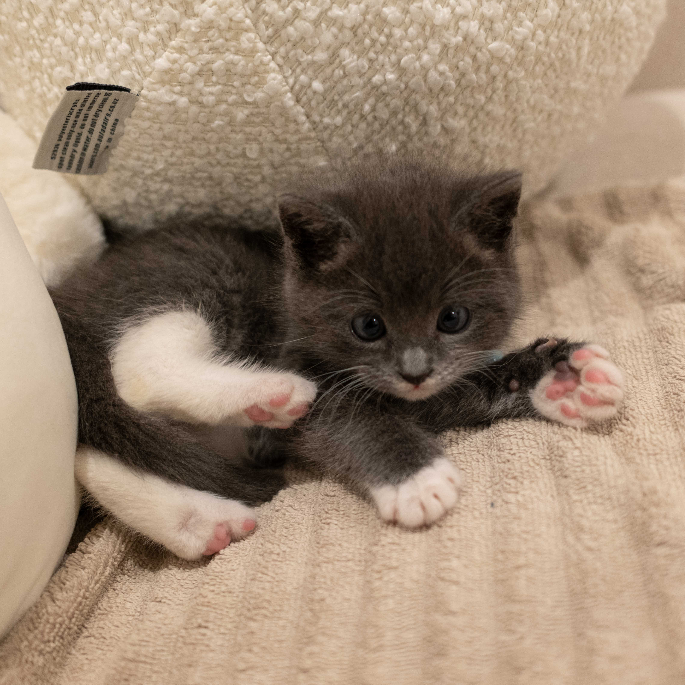
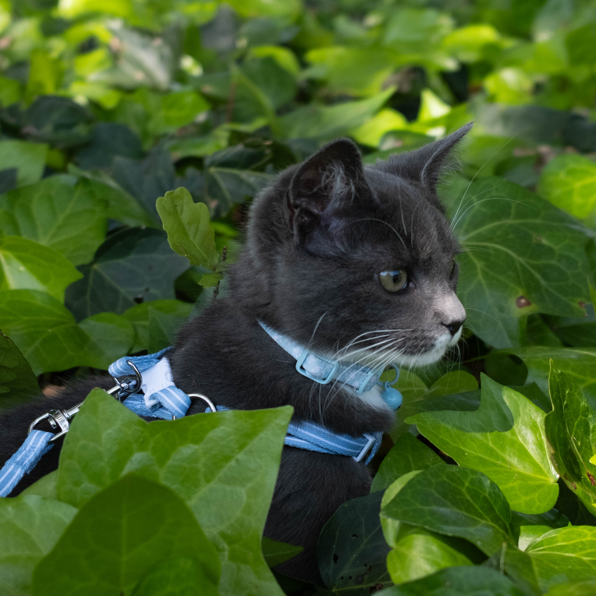
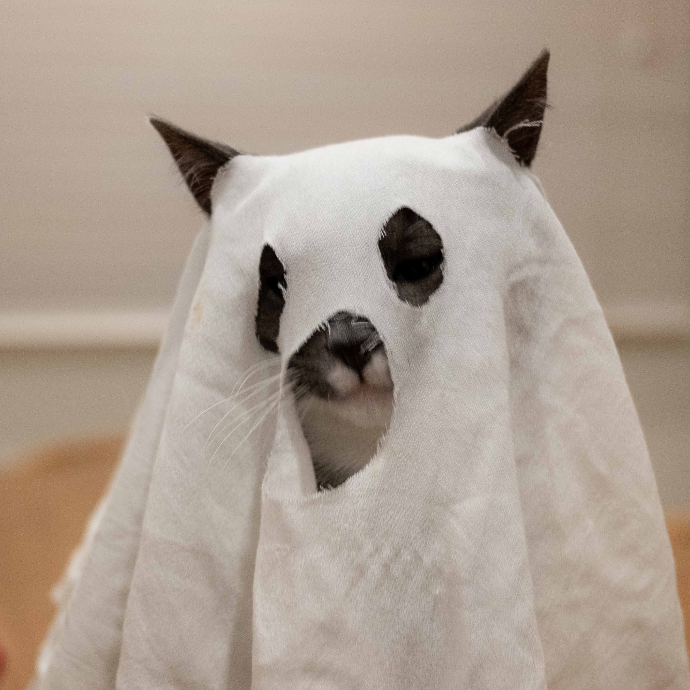

NIMBUS

Mischievous and gluttonous. Moody when his alone time gets disturbed. He tries his best to be a gentleman. Nimbus's name was inspired by the Nimbus 2000 broomstick from the Harry Potter franchise and the Flying Nimbus from the Dragon Ball franchise.
Age: 10 months
Sex: Male
Breed: Domestic shorthair (Tuxedo)
Stats
Energy
Jump
Stealth
Hunger
Gallery


